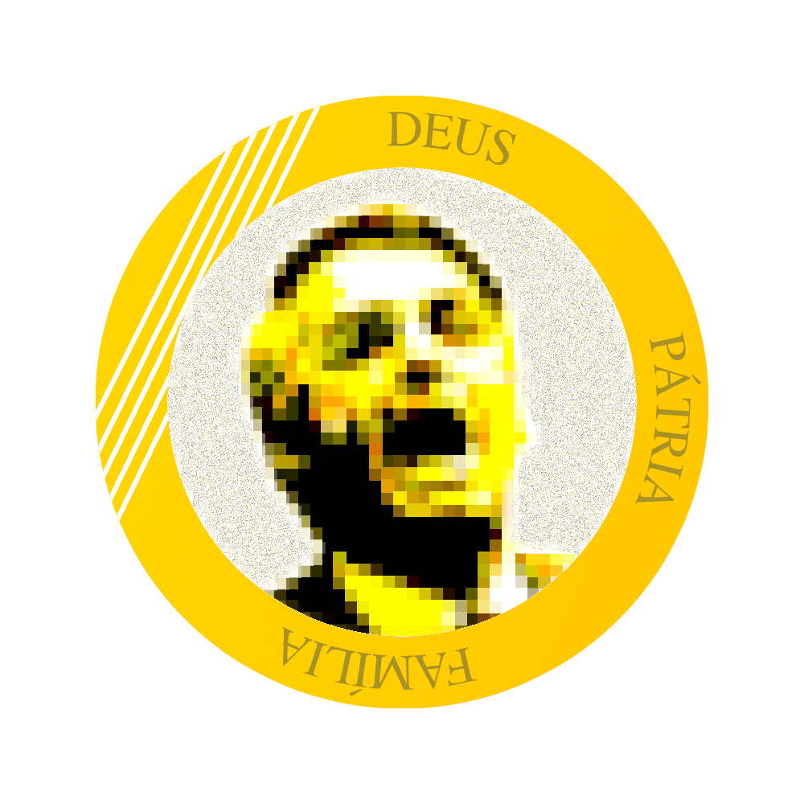

Manifesto
NOSSA NAÇÃO PASSA POR UM GRANDE PERIGO.
O PIX E O DREX SÃO AMEAÇAS AO CONTROLE DO SEU DINHEIRO.
ELES QUEREM CONTROLAR SUA CONTA BANCÁRIA.
O Pix já é taxado em algumas transferências. O valor dessa taxa é usado pelo desgoverno para financiar agendas woke e países comunistas.
Até mesmo o dinheiro da mesada do seu filho, da caridade, da igreja, será usado para promover a destruição dos valores da sua família.
Com cada vez mais impostos, o dinheiro sai da mesa da família e vai parar na mão de ladrões comunistas.
BOL$OLANA É A RESPOSTA DO POVO: SEM TAXAS ABUSIVAS, SEM CONTROLE DO GOVERNO.
A **Bol$olana** é a **MOEDA DA LIBERDADE**, a resposta imbatível contra as taxas abusivas e o controle opressor do governo. **Sem PIX taxado, sem DREX, sem limitaçoes! Ela nasce como um grito de independência, para garantir que **SEU DINHEIRO SEJA SEU**, e não de governos ou sistemas corruptos.
Este é apenas o COMEÇO de uma revolução. A **Bol$olana** é o primeiro passo ao futuro em que sera maior que a própria rede Solana.
Com a força de todos a Bolsocoin sera a moeda digital Brasileira totalmente livre , onde cada cidadão podera rodar seu proprio node nos livrando eternamente do Banco Central e dos politicos corruptos trazendo dignidade e **prosperidade** para o povo.
Hoje, com a **Bol$olana**, estamos **rompendo as correntes do sistema financeiro**. Estamos **iniciando uma nova era**, onde o povo brasileiro será o dono do seu próprio destino financeiro. O futuro é da **liberdade**, da **prosperidade**, e da **BOL$OLANA**. **Junte-se a nós e faça parte da história!**
BOLSOLANA É PARA QUEM ACREDITA NA LIBERDADE E NA FAMÍLIA.
Se você ajudar, a BOLSOLANA será uma moeda grande e estável, mais valorizada que o real, e, sem o governo atrapalhando, poderá bater o próprio dólar ou mais.
Quer fazer parte desse objetivo? Baixe o PDF e venha fazer parte desse sonho.
A BOL$OLANA roda na **BLOCKCHAIN Solana**, mesma blockchain da $TRUMP
10% das moedas foram alocadas para apoiar o presidente **Bolsonaro**, com o intuito de fortalecer sua luta pela liberdade financeira.
O povo já falou e todos querem BOL$OLANA
📄 Baixar Manifesto